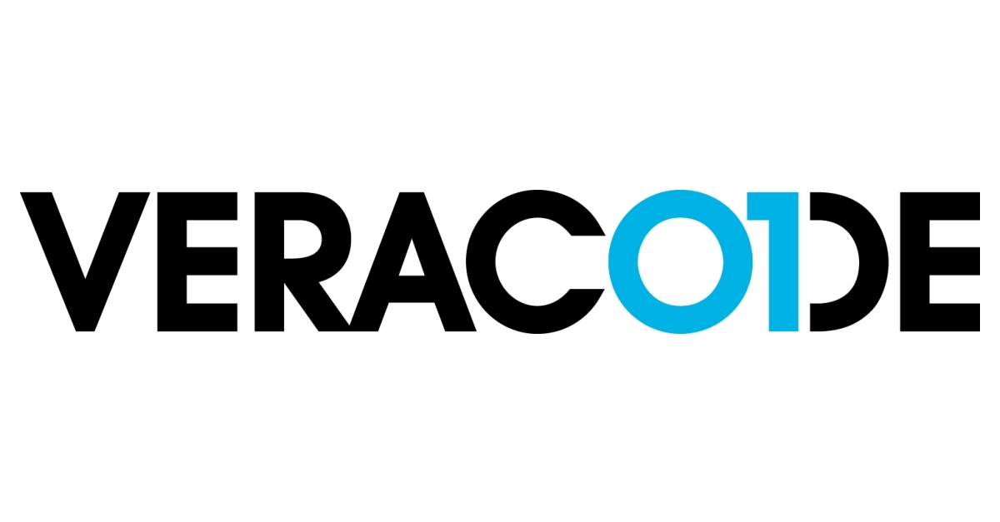

HACKERONE
9;30-10;30, 10 september, 2021
HackerOne is een cybersecurity bedrijf, het heeft een kwetsbaarheidscoördinatie- en bugbounty-platform dat bedrijven in contact brengt met penetratietesters en cyberbeveiligingsonderzoekers. Deze penetratietesters en cyberbeveiligingsonderzoekers
hacken het systeem van de klant, vanaf dat ze een bug vinden kkrijgen ze een geldbedrag, afhankelijk van hoe gevaarlijk de bug is, wordt het bedrag groter.
HackerOne werkt met de volgende software:
Client-side:
React, Tailwind & Apollo
Server-side:
GraphQL, Ruby on Rails
Testing;
RSpec & Cucumber
Infrastructure:
Potgres, Redis/Sidekiq
VERACODE
11;00-12;00, 10 september, 2021
Veracode is een applicatiebeveiligingsbedrijf. Veracode biedt meerdere technologieën voor softwarebeveiligingsanalyse op een enkel SaaS-platform, inclusief statische analyse (of white-box-testen), dynamische analyse (of black-box-testen) en
analyse van softwaresamenstelling. Deze voorkomen allemaal softwarekwetsbaarheden zoals cross-site scripting(XSS) en SQL-injectie.
Veracode werkt met de volgende software:
Application security:
XSS, SQLi, CSRF
Programming language:
.NET , Rust
Technologies:
WebAssembly